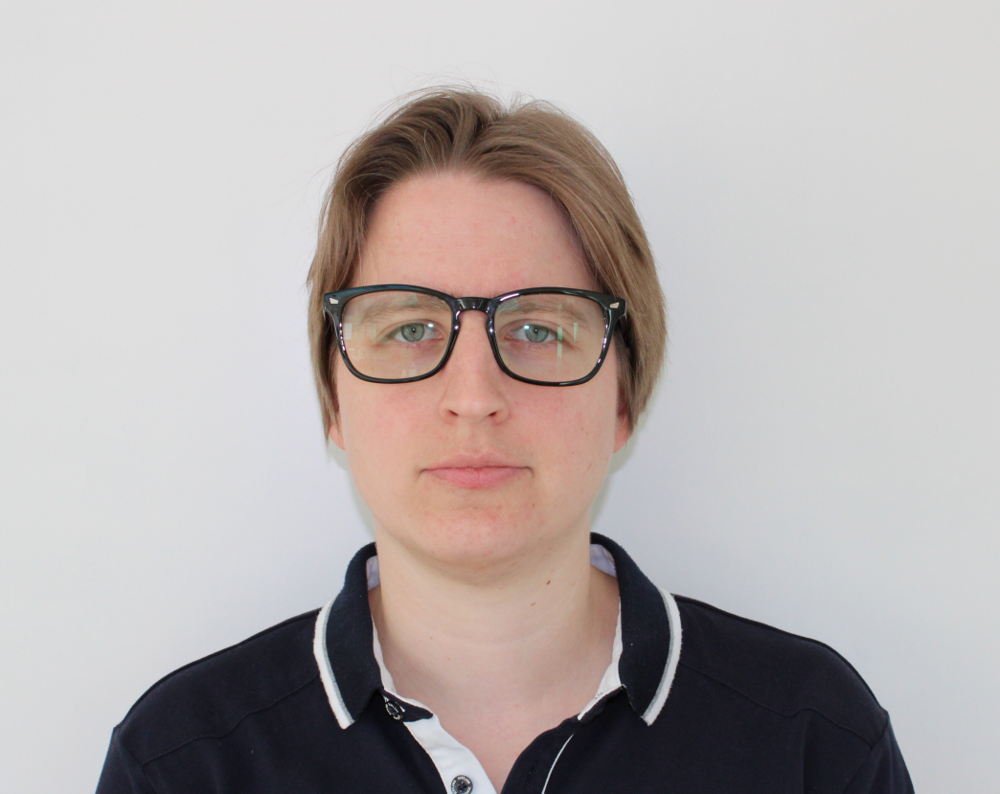

|  |
Hanne GrosemansLab Technician / Lab Manager / Data Scientist I did my thesis at the functional biology lab at the KU Leuven. Here I worked with bacteria and yeast (Saccharomyces cerevisiae) and used a broad range of techniques including PCR, genetical manipulation of yeast, cloning, and western blot. I really enjoyed my time here and I was passionate about the research. After this, I started working at the Stem cell institute at the KU Leuven. Here I had the opportunity to have the freedom to plan experiments and I had the chance to broaden my knowledge in cell culture, molecular biology, animal experiments, data analysis etc. During this last year, I moved to the University of Edinburgh. Here I started working with yeast again. Here, I got the chance of using my programming skills .I have more than eight years of experience in the academic world, working with master students, PhD students and post- docs. ReferencesContact |
| Date | Work | Where | Laboratory techniques |
|---|---|---|---|
| 2019 - now | Research Assistant, Data Scientist | University of Edinburgh, SynthSys, Granneman Lab | GL |
| 2013 - 2019 | Lab Technician, Lab Manager, Data Scientist | KU Leuven, Department of health, Stem Cell Institute, Lab Translational Cardiomyology | SCIL |
| 2012 - 2013 | Lab technician and responsible for IT | KU Leuven, Department of Biology, Lab Functional Biology | FB |
Bachelor in Agro- and Biotechnology
Co- expression of human annexin A2 with wild type and mutant tau protein in a humanised yeast model.
| Reading | Writing | Speaking | |
|---|---|---|---|
| Dutch | Mothertongue | ||
| English | Fluent | Good | Fluent |
| French | Basic | Basic | Basic |
| Italian | Basic A2 | Basic A2 | Basic A2 |